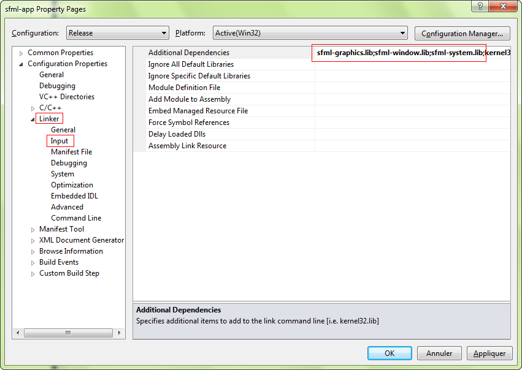
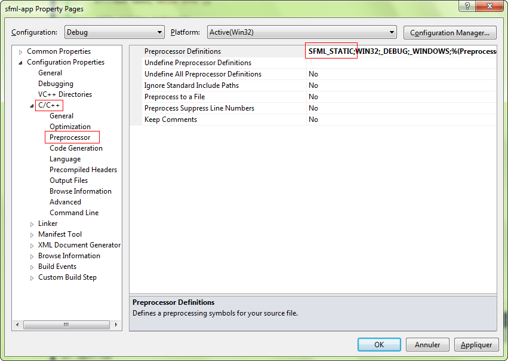
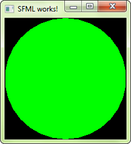

Это руководство является первым, которое следует прочитать, если вы используете SFML с интегрированной средой разработки Visual Studio (компилятор Visual C++). В нем объясняется, как настроить ваши проекты SFML.
Во-первых, вы должны загрузить SDK SFML со страницы загрузки.
Вы должны загрузить пакет, соответствующий вашей версии Visual C++. Действительно, библиотека, скомпилированная с помощью VC++ 10 (Visual Studio 2010), например, не будет совместима с VC++ 12 (Visual Studio 2013). Если для вашей версии Visual C++ не скомпилирован пакет SFML, вам придется собрать SFML самостоятельно.
Затем вы можете распаковать архив SFML куда угодно. Копировать заголовки и библиотеки в вашу установку Visual Studio не рекомендуется, лучше хранить библиотеки в отдельном месте, особенно если вы собираетесь использовать несколько версий одной и той же библиотеки или несколько компиляторов.
Первое, что нужно сделать, это выбрать, какой проект создать. Рекомендуется выбрать «Пустой проект». Диалоговое окно предлагает несколько других параметров для настройки проекта: выберите «Консольное приложение» или «Приложение Windows», только если вы знаете, как использовать предварительно скомпилированные заголовки.
Для целей этого руководства вы должны создать файл main.cpp и добавить его в проект, чтобы у нас был доступ к настройкам C++ (иначе Visual Studio не будет знать, какой язык вы собираетесь использовать для этого проекта). ). Мы объясним, что положить внутрь позже.
Теперь нам нужно указать компилятору, где найти заголовки SFML (файлы .hpp), и компоновщику, где найти библиотеки SFML (файлы .lib).
В свойствах проекта добавьте:
Эти пути одинаковы как в конфигурации отладки, так и в конфигурации выпуска, поэтому вы можете задать их глобально для своего проекта ("Все конфигурации").
Следующий шаг — связать ваше приложение с библиотеками SFML (файлы .lib), которые потребуются вашему коду. SFML состоит из 5 модулей (системный, оконный, графический, сетевой и аудио), и для каждого из них имеется по одной библиотеке.
Библиотеки нужно добавлять в свойствах проекта, в Linker » Input » Additional Dependencies. Добавьте все необходимые вам библиотеки SFML, например «sfml-graphics.lib», «sfml-window.lib» и «sfml-system.lib».
Важно связать библиотеки, соответствующие конфигурации: «sfml-xxx-d.lib» для отладки и «sfml-xxx.lib» для выпуска. Плохая смесь может привести к сбоям.
Показанные здесь настройки приведут к тому, что ваше приложение будет связано с динамической версией SFML, которая нуждается в файлах DLL. Если вы хотите избавиться от этих DLL и напрямую интегрировать SFML в ваш исполняемый файл, вы должны создать ссылку на статическую версию. Статические библиотеки SFML имеют суффикс «-s»: «sfml-xxx-s-d.lib» для отладки и «sfml-xxx-s.lib» для выпуска. В этом случае вам также потребуется определить макрос SFML_STATIC в параметрах препроцессора вашего проекта.
Начиная с SFML 2.2, при статической компоновке вам также придется связать все зависимости SFML с вашим проектом. Это означает, что если вы линкуете, например, sfml-window-s.lib или sfml-window-s-d.lib, вам также придется линковать opengl32.lib, winmm.lib и gdi32.lib. Некоторые из этих библиотек зависимостей уже могут быть перечислены в разделе «Унаследованные значения», но их повторное добавление не должно вызывать проблем.
Вот зависимости каждого модуля, добавьте -d, как описано выше, если вы хотите связать библиотеки отладки SFML:
| Модуль | Зависимости |
|---|---|
| sfml-graphics-s.lib |
|
| sfml-window-s.lib |
|
| sfml-audio-s.lib |
|
| sfml-network-s.lib |
|
| sfml-system-s.lib |
|
Вы могли заметить из таблицы, что модули SFML также могут зависеть друг от друга, например. sfml-graphics-s.lib зависит как от sfml-window-s.lib, так и от sfml-system-s.lib. Если вы статично связываетесь с библиотекой SFML, обязательно ссылайтесь на зависимости рассматриваемой библиотеки, а также на зависимости зависимостей и т. д. Если что-то в цепочке зависимостей отсутствует, вы получите ошибки компоновщика.
Если вы немного запутались, не волнуйтесь, для новичков совершенно нормально быть перегруженным всей этой информацией о статической компоновке. Если что-то не работает у вас с первого раза, вы можете просто продолжать пробовать, всегда помня о том, что было сказано выше. Если вы по-прежнему не можете заставить статическую ссылку работать, вы можете проверить часто задаваемые вопросы и форум для тем, посвященных статической ссылке.
Если вы не знаете различий между динамическими (также называемыми общими) и статическими библиотеками и не знаете, какую из них использовать, вы можете поискать дополнительную информацию в Интернете. О них есть много хороших статей/блогов/постов.
Ваш проект готов, давайте напишем код, чтобы убедиться, что он работает. Поместите следующий код в файл main.cpp:
#include <SFML/Graphics.hpp>
int main()
{
sf::RenderWindow window(sf::VideoMode(200, 200), "SFML works!");
sf::CircleShape shape(100.f);
shape.setFillColor(sf::Color::Green);
while (window.isOpen())
{
sf::Event event;
while (window.pollEvent(event))
{
if (event.type == sf::Event::Closed)
window.close();
}
window.clear();
window.draw(shape);
window.display();
}
return 0;
}
Если вы решили создать проект «приложение Windows», точка входа вашего кода должна быть установлена на «WinMain» вместо «main». Поскольку это специфично для Windows, и поэтому ваш код не будет компилироваться в Linux или macOS, SFML предоставляет способ сохранить стандартную «основную» точку входа в этом случае: связать свой проект с модулем sfml-main («sfml-main-d.lib" в Debug, "sfml-main.lib" в Release), так же, как вы связали sfml-graphics, sfml-window и sfml-system.
Теперь скомпилируйте проект, и если вы связались с динамической версией SFML, не забудьте скопировать библиотеки DLL SFML (они находятся в <sfml-install-path/bin>) в каталог, где находится ваш скомпилированный исполняемый файл. Запустите его, и если все работает, вы должны увидеть это:
Если вы используете модуль sfml-audio (независимо от того, статически он или динамически), вы также должны скопировать DLL необходимой ему внешней библиотеки, а именно OpenAL32.dll. Эти файлы также можно найти в <sfml-install-path/bin>.